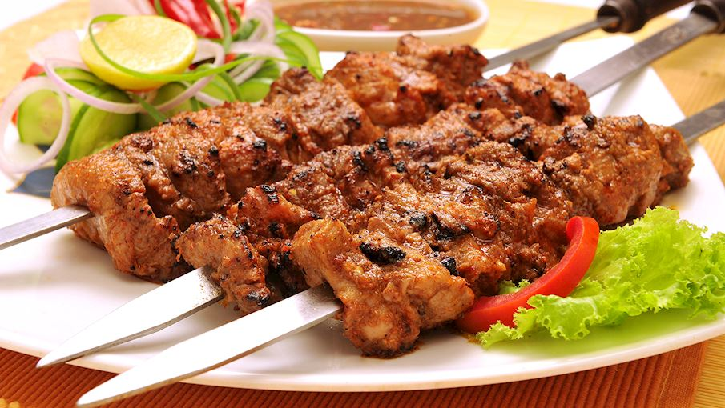
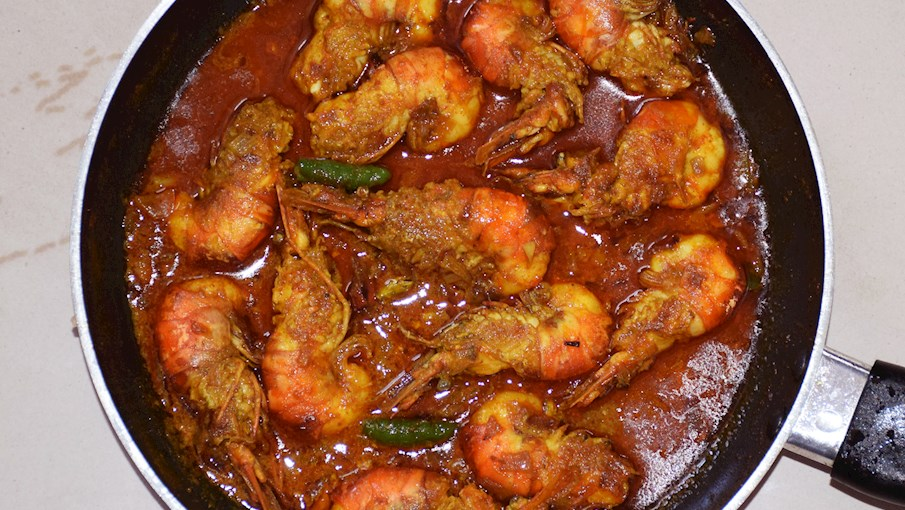

Bihari Kebab is a traditional delicacy from Bihar that has gained popularity across India for its smoky, melt-in-the-mouth taste. Unlike regular kebabs, the meat in Bihari kebabs is marinated for hours in a rich blend of spices such as mustard oil, ginger-garlic paste, cumin, coriander, and garam masala, along with yogurt to tenderize it. Thin strips of beef, mutton, or chicken are coated with this marinade and then slow-cooked over charcoal, giving them an irresistible smoky flavor.

Chicken Kathi Roll is one of the most iconic street foods to come out of Kolkata, East India. It is a delicious wrap made by stuffing spicy, marinated chicken pieces into a flaky paratha or roti, often layered with eggs and onions. The chicken is usually cooked with a blend of flavorful spices, ginger, garlic, and green chilies, giving it a fiery yet tangy taste. Once cooked, it is rolled up with fresh onions, chutneys, and sometimes a squeeze of lemon, making it a portable and satisfying meal.

Chingri Malai Curry is a royal delicacy from Bengal, known for its rich, creamy, and mildly spiced flavors. The dish is made with succulent prawns (chingri) cooked in a luscious gravy of coconut milk, onion, ginger, garlic, and a fragrant mix of Bengali spices. The addition of coconut milk gives the curry a velvety texture and a subtle sweetness that perfectly balances the heat of the spices. A touch of ghee and garam masala at the end elevates the dish, making it truly irresistible.

Gobi Manchurian is a popular Indo-Chinese dish that has become a staple in Eastern Indian street food culture, especially in cities like Kolkata. Made with cauliflower florets (gobi) that are battered, deep-fried until golden crisp, and then tossed in a tangy, spicy sauce, this dish is the perfect fusion of Indian and Chinese flavors. The sauce is prepared using garlic, ginger, soy sauce, chili sauce, and vinegar, creating a bold and zesty taste that clings to the crispy cauliflower pieces.

Khaja is a traditional sweet from Odisha and Bihar, cherished for its crisp, flaky layers and melt-in-the-mouth sweetness. Made with simple ingredients like flour, sugar, and ghee, Khaja is prepared by rolling out thin sheets of dough, stacking them together, and then deep-frying until golden brown. After frying, the pieces are soaked in sugar syrup, which seeps into the flaky layers, giving them a delightful crunch with every bite.

Kheer is one of India’s most beloved desserts, enjoyed across the country in countless variations. This creamy rice pudding is traditionally made by simmering rice, milk, and sugar together until the mixture thickens into a rich and velvety texture. To enhance its flavor, it is often garnished with cardamom, saffron, and dry fruits like almonds, cashews, and raisins.

Ras Malai is a luxurious Indian dessert that melts in the mouth with its delicate softness and rich flavors. It consists of spongy, flattened balls of chenna (cottage cheese) soaked in chilled, thickened milk flavored with cardamom, saffron, and sometimes rose water. The creamy milk, known as ras, is lightly sweetened and infused with dry fruits like pistachios and almonds, which add both taste and texture.

Rasgulla is a classic Bengali sweet that has won hearts across India and beyond. Made from chenna (freshly curdled cheese) and semolina, the soft, spongy balls are boiled in light sugar syrup until they absorb the sweetness and become delightfully juicy. The texture is light and springy, almost like a sweet sponge, making every bite a burst of sugary bliss.